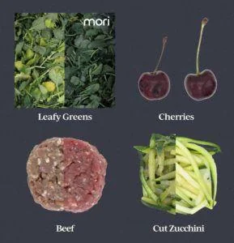

EXCLUSIVE: Sericulture startup Mori raises $12m Series A to preserve food with silk
So, common sense was wrong. It turns out you can eat silk! But before you drag out that Kimono of yours and swiftly devour it in celebration, hold on a second — you need a crucial bit of cutting-edge protein extraction technology first.
Enter Mori, a savvy sericulture startup spinning out of MIT and Tufts with a plan to reduce food waste by effectively marinating sausages, strawberries or steaks with an imperceptible and edible micro-layer of silk-based proteins. These keep all sorts of food from going to waste, the team claims, and tapers back dependence on single-use plastics.
Such an unexpected reimagining of the ancient art of sericulture won Mori — which has just rebranded from Cambridge Crops — an AgFunder Innovation Award last year in San Francisco. Back when such awards could be presented to large crowds (alright, large-ish!)
In the months since, things have run smoothly in Cambridge, Ma. So much so that this Thursday CEO Adam Behrens revealed exclusively to AFN that his team has closed its Series A at $12 million.
$12m for a smooth bite of food tech
Led by Acre Venture Partners, the funding round attracted new investors like Prelude Ventures, The Jeremy and Hannelore Grantham Environmental Trust, and ACCELR8. Returning investors included The Engine, Refactor Capital, Closed Loop Partners, Blindspot Ventures, and The Fink Family Foundation.
Mori’s food tech is extracted from silk through a water-based process and has the ability to form a natural protective, edible, and tasteless barrier on a wide range of food items, including whole produce, cut produce, meat, fish, and processed goods. The team at Mori says its silk protein allows food to stay fresher for longer by preventing oxidation, improving water retention, and slowing microbial growth.
The process was spun out of professor Fiorenzo Omenetto’s silk lab at Tufts University and was co-invented with MIT professor Benedetto Marelli. In his undergraduate days at the Polytechnic Institute of Milan, Marelli first started experimenting with silk for proven biomedical applications — an existing biotech silk process has been long established vaccines or silk scaffold tissue engineering. While at Tufts, Marelli coated some strawberries in silk as part of a lab cooking competition, and serendipitously discovered its unique properties. “I left them on the bench,” he recalled in a Medium post last year. “When I came back four or five days later, the ones [that] were not coated spoiled, while the other ones did not.”

“Typically, a membrane is either a good barrier for oxygen, or a good barrier for water. Given the structure of polymers, there is a mutual exclusivity between the two,” he added, “Silk somehow has both qualities.” Dehydration makes the food lose shape and shrivel, while oxidation discolors food and the flavor changes. In addition, he noted, silk provides a natural barrier to microbes, which can cause food to rot.
Silky Salads
In a video call, Behrens said the company rebranded from Cambridge Crops “to better reflect the breadth of the technology core to its mission.” The naturally-occurring protein forming the basis of the company’s protective barrier comes from the Bombyx mori silk moth, which has evolved to protect life against the elements.
“I love the idea that nature holds the answers,” said Acre’s managing partner Lucas Mann by phone. “It is a natural solution that is fundamentally flexible,” he said, and “it works seamlessly with existing manufacturing.” Mann noted how food waste was a vast issue in the US and elsewhere, and how Covid-19, with its knock-on effects on empty supermarket aisles, had heightened awareness of the importance of lengthening food’s shelf life. Processing, transporting, and disposing of food that is never eaten costs $218 billion per year in the US alone, according to ReFed, a nonprofit dedicated to reducing food waste. Globally, some estimates suggest food waste corresponds to an annual loss of $2.6 trillion.
“We often ask ourselves about what we can enable by extending shelf life,” added Behrens, who himself previously worked at The Langer Lab at MIT, where he worked on ways to keep vaccines and vitamins stable for long times in non-refrigerated environments, before exploring food more generally with Sezin Yigit. Unlike other food tech or agtech startups that have opportunistically pivoted back to biotech in response to Covid-19, Behrens said the focus would remain in food: “There are major implications across food waste, food access, freight efficiency, food quality, and even the packaging we use.”
Presumably, that rules out creating bulletproof vests out of spider silk as well — a fantasy of another sericulture startup that dreamed of extracting spider silk from genetically modified goat’s milk; that startup has since gone bust.
Generally Recognized as Safe Silk
Recently Mori has obtained Self-Designated GRAS (Generally Recognized as Safe) status, set by the US Food and Drug Administration (FDA), for its silk proteins to be used in a wide range of food applications. The GRAS Self-Designation process acknowledges the acceptance of food and beverage ingredients and requires the approval of an Expert Panel. Mori’s Expert Panel, made up of toxicologists, nutritionists, and allergists, concluded that the silk protein is safe for everyone to consume. Further certifications from the FDA and USDA are expected in the coming months, the team hopes.
Aside from being heartened by signs of regulatory progress on the horizon, Mann also said he had known Mori for a long time and had been impressed by the company’s strong intellectual property portfolio. The technology is currently protected by 20 patents, 25 patent applications, and numerous trade secrets worldwide. He said that while the team looks to China as a dominant sericulture producer, there were also talks of diversifying supplies in light of US-China trade tensions. Behrens, meanwhile, noted how the funding will help build out Mori’s manufacturing capabilities, and will be deployed to secure commercial partnerships in multiple food categories. The team already has various major partners that Behrens declined to disclose on record.
But there will be a hotbed of competition for these sorts of partnerships; the global food waste space is fermenting with innovation and fresh funding. For a case study from last year, scan through AFN’s deep dive into some of the startups and political initiatives behind the UK’s attempts to curb food waste. The space is now more crowded and there are some bigger companies at the table. Apeel Sciences recently raised a mammoth $250 million round from Singapore state fund GIC alongside celebrity investors Oprah and Katy Perry, as well as AgFunder (we’re celebrities too, right?!)
Hazel Technologies closed an oversubscribed $13 million Series B funding round last year for its sachet-like packaging inserts that helps extend foods’ shelf life. The round was led by Pangea Ventures, which focuses on advanced materials venture capital, alongside existing ag-focused investor S2G Ventures, bringing Hazel’s total capital raised to $17.8 million. Just this week, it found a new partner in Fundo Los Paltos, a grower and exporter of Peruvian mangos.
Gas, Powder, Software, Sachets, or Stickers?
Sachets or silk are far from the only way to extend foods’ shelf life. Companies like Spoiler Alert offer software solutions; others like Stix Fresh have gas emitting stickers to forestall decay. Apeel goes for a plant-based powder, which companies can mix with water and laminate their produce at an early stage of the supply chain.
So, what will it be: gas, stickers, sachets, software, powder, stickers — or silk?